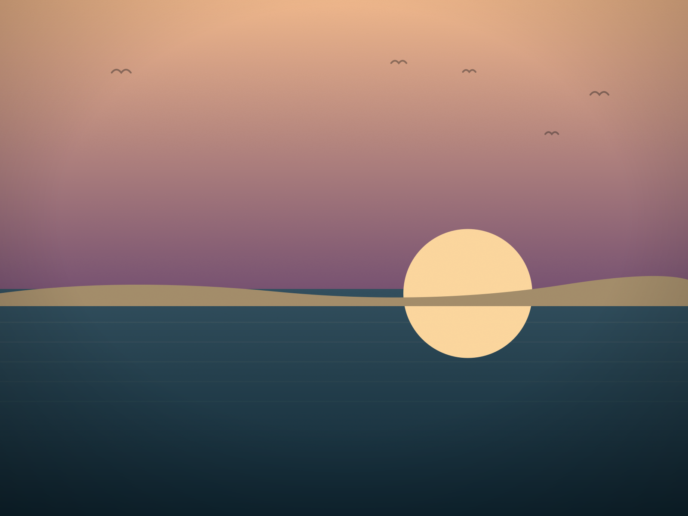

Gordon's Pond to the Water
The boardwalk everyone takes to the beach, and the quiet trail past it that most people never find — one of the best easy walks near Rehoboth and Lewes.
Twenty-five minutes for the view. An hour if you want the quiet.
Gordon's Pond sits inside Cape Henlopen State Park, a short drive from either Rehoboth Beach or Lewes, and it does something most Delaware beach walks don't: it gives you a choice. Take the boardwalk straight out and back for an easy half-hour, or add the unmarked loop through the maritime forest for a longer walk that trades ocean views for real solitude.
The one-line version
Park at the Gordon's Pond lot, walk the boardwalk straight out to the beach and back if you're short on time. If you have an hour, follow the boardwalk to where it turns back inland and keep going straight instead — the narrow dirt path through the pines is where the park actually gets quiet.
What you're actually walking through.
From the Gordon's Pond parking lot, the main boardwalk trail does exactly what it's built to do — it gets a steady stream of walkers straight out to the beach, flat and easy, done in about twenty-five minutes round trip if you go straight there and back. Most visitors do exactly that and call it a day, and there's nothing wrong with that version of the walk.
But where the boardwalk crosses back inland on the return leg, a narrower dirt path splits off through the maritime forest instead of heading straight back to the lot. It's marked, technically, with small blazes easy to miss if you're not looking down — which is probably why so few people take it.
The path winds through loblolly pine and holly thickets, opens briefly onto marsh views facing the bay, and stays noticeably cooler than the open dune trail in July. It adds maybe forty minutes to the walk, and for most of it, the loudest sound is wind moving through pine needles instead of the ocean.
It loops back to the main lot eventually — no navigation required, no risk of getting lost. For a park that gets genuinely crowded on summer weekends, it's the closest thing to solitude Cape Henlopen offers.
We wrote up the full story of this side trail separately, with more of the texture of what it actually feels like out there — worth a read if you want the long version before you go: The Unmarked Trail Behind Gordon's Pond →
A few things that make the walk easier.
Verify before you drive out — this is the part that changes.
Cape Henlopen State Park charges a seasonal vehicle entrance fee and can adjust hours, closures or trail conditions with little notice. Confirm current details directly from the park before you go, not from a saved memory of last year's visit.
More from Cape Henlopen and nearby

Cape Henlopen
The full town guide — dunes, pine forest and the WWII watchtower that shares the park with this walk.

Surf Fishing Delaware
Beach Plum Island and Cape Henlopen also happen to be two of the best surf-fishing beaches on the coast.
The Galloping Dune
The stabilized Great Dune, and the park geography that shapes trails like this one.
Tag @delawarebeachfinds with your own Gordon's Pond photos →